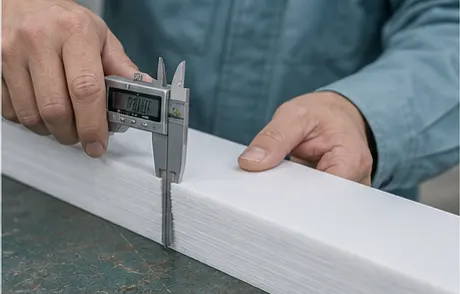
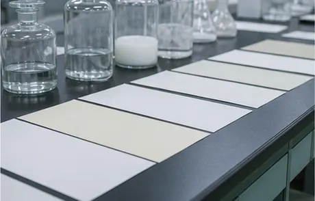
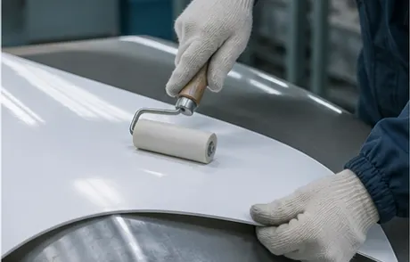

Material
凪シールド GC
凪シールド GC は、PTFEシートの裏面にガラスクロスを一体にした、厚手の内張り材です。ガラスクロスの面を接着剤で金属の下地に貼り付けることで、シートを広い面でしっかりと固定します。
PTFEは薬品に強い一方、分子の隙間をごくわずかにガスが通り抜けます。凪シールド GC は層を重ねた構成と厚みで、その通り道を長くとっています。130℃前後の薬液を扱う槽でも内面が荒れにくく、定期修理の間隔をひとつ先へ延ばすことをめざした材料です。
- 01
層で受け止める
PTFEとガラスクロスを重ねた構成で、シートを抜けようとするガスや蒸気の影響を下地まで届きにくくしています。
- 02
面で密着させる
下地をブラストで整え、ガラスクロス面を全面で接着します。負圧のかかる設備でもシートが浮きにくくなります。
- 03
継ぎ目を一体にする
シート同士の継ぎ目は熱で溶かして接合し、上から当て板を重ねます。継ぎ目が弱点にならないよう、手順を決めています。
Selection
シートの選び方
同じフッ素樹脂でも、種類と厚みで向き不向きがあります。私たちは、次の4つを伺ってから材料を決めています。
- 薬液の種類と濃度酸か、アルカリか、溶剤か。薬液を切り替えて使うかどうかも伺います
- 温度とその変わり方常に温かいのか、加温と冷却を繰り返すのか。温度の上下はシートと下地の両方に負担をかけます
- 圧力・負圧減圧で運転する設備や、真空になる可能性がある設備は、シートを引きはがす力への備えが要ります
- 点検と運転の周期次にいつ設備を止められるか。そこまで持たせる厚みと仕様を考えます

使用できる温度や薬液の範囲は、運転の条件によって変わります。浸漬試験の結果なども踏まえて、設備ごとにご提案します。
Process
施工の手順
- 01
下地を整える
金属の表面をブラストで処理し、錆や油分を落として、接着に向いた粗さにそろえます。
- 02
シートを貼る
設備の形に合わせて裁断・成形したシートを、接着剤で下地に貼り込み、ローラーで空気を抜きます。
- 03
継ぎ目を接合する
熱風と溶接棒で継ぎ目を溶かして一体にします。温度と速さは、シートの種類ごとに決めた値で行います。
- 04
確かめる
全面のピンホール検査と厚み測定、外観の確認を行い、結果を記録に残します。


Inspection
検査と記録
内張りでいちばん避けたいのは、目に見えない小さな穴です。高い電圧をかけたブラシで内面をなぞるピンホール検査を全面に行い、反応があった箇所は補修してから再び検査します。
検査の結果、施工した日、使った材料のロット、継ぎ目の位置は、設備ごとの記録にまとめてお渡しします。次の点検のとき、どこを重点的に見ればよいかがすぐにわかるようにするためです。
Q&A
よくいただくご質問
図面がなくても相談できますか？
できます。設備の写真や銘板、使っている薬液の情報があれば、まずはそこから検討します。必要に応じて現地で寸法を測ります。
他社が施工した設備の補修もできますか？
状態を拝見したうえでお受けしています。既存のシートの種類がわからない場合は、小さな試験片で確認してから補修の方法を決めます。
1台だけ、小さな容器だけでも頼めますか？
はい。ドラムや計量槽のような小さな容器も、1台から承ります。
見積までにどのくらいかかりますか？
内容によりますが、資料がそろっていれば1〜2週間ほどでご提出しています。現地の確認が必要な場合は、日程をご相談します。